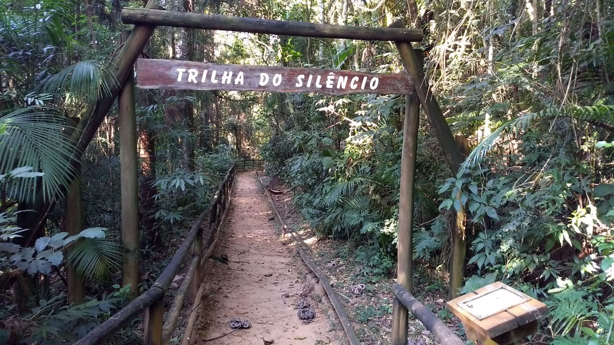

Pico do Jaragua
Pico do Jaragua o ponto mais alto de São Paulo O Pico do Jaraguá é o ponto mais alto de São Paulo, chegando a uma altitude de 1.135 metros. Localizado no bairro do Jaraguá, a oeste da serra da Cantareira, além de ter como vizinhos os bairros de Perus e Pirituba e o município de Osasco. Nos seus arredores, foi criado o Parque Estadual do Jaraguá, para conservação da área. Pode-se chegar ao seu cume por uma via asfaltada (Estrada Turística do Jaraguá) e através da Trilha do Pai Zé (1.450 metros de extensão). No topo, há duas grandes antenas, sendo uma de televisão, compartilhada por 3 emissoras: TV Globo São Paulo, TV Bandeirantes São Paulo e TV Cultura, além de pequenas instalações comerciais e locais destinados a estacionamento de veículos. Ao se atingir o topo, tem-se uma visão principalmente da parte oeste da Grande São Paulo. Também pode ser avistado o Rodoanel Mário Covas, na parte posterior. Junto à antena de televisão, existe uma grande escadaria que permite subir ainda mais, ladeada por um bondinho que se destina ao transporte de pessoas e materiais para manutenção da antena.
Pico do Jaragua
Parque Estadual do Jaraguá
O Parque Estadual do Jaraguá é um parque e área de preservação brasileiro. A área de conservação foi criada em 1961, em torno do Pico do Jaraguá, o ponto mais alto do município de São Paulo, elevando-se a uma altitude de 1.135 metros, na Serra da Cantareira. É um parque remanescente de Mata Atlântica, onde se localiza a casa de Afonso Sardinha, que hoje é tombada pelo patrimônio histórico, do lado da casa também está localizado o local onde os escravos lavavam os ouros que eram encontrados no local. Tem três trilhas com total contato com a natureza. Também é possível encontrar uma tribo de índios que até hoje vivem lá. O Parque Estadual do Jaraguá é um parque e área de preservação brasileiro. A área de conservação foi criada em 1961, em torno do Pico do Jaraguá, o ponto mais alto do município de São Paulo, elevando-se a uma altitude de 1.135 metros, na Serra da Cantareira. É um parque remanescente de Mata Atlântica, onde se localiza a casa de Afonso Sardinha, que hoje é tombada pelo patrimônio histórico, do lado da casa também está localizado o local onde os escravos lavavam os ouros que eram encontrados no local. Tem três trilhas com total contato com a natureza. Também é possível encontrar uma tribo de índios que até hoje vivem lá. Com área de 491,98 hectares, localizado na Zona Noroeste da cidade de São Paulo, onde passa o Trópico de Capricórnio. Seu maior atrativo é o Pico do Jaraguá, que em Tupi significa “senhor do vale”. Devido à sua imponência, é ponto de referência para quem chega ou deixa a capital pelo sistema Anhangüera-Bandeirantes.
